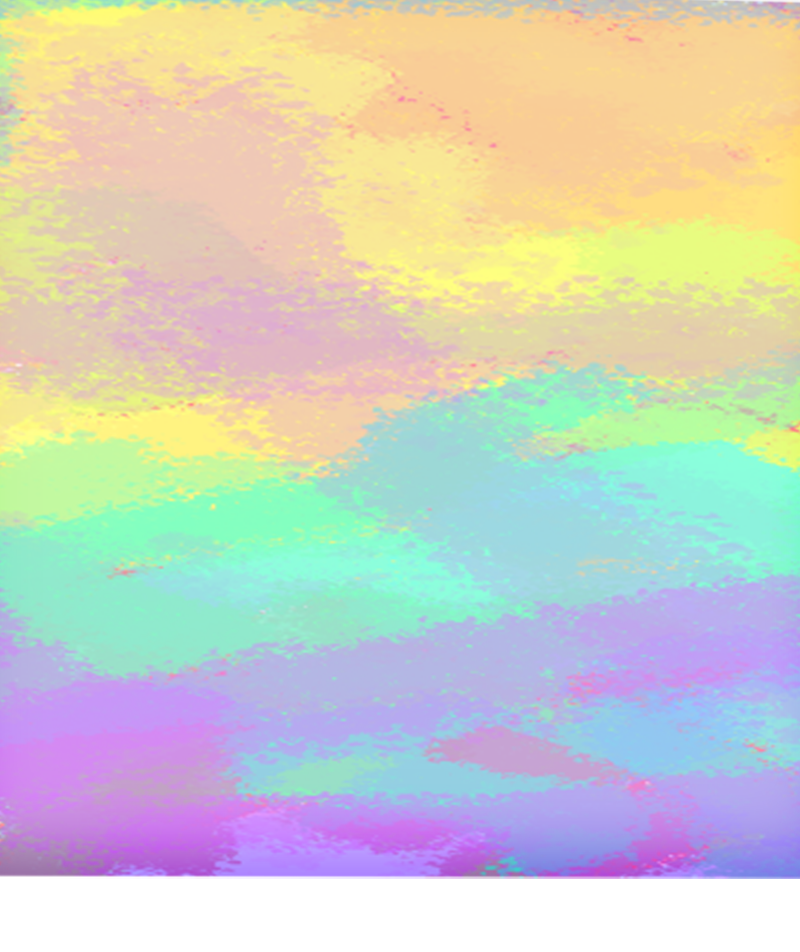
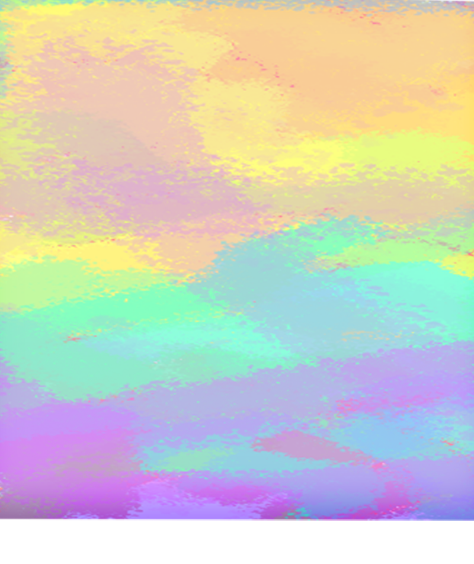
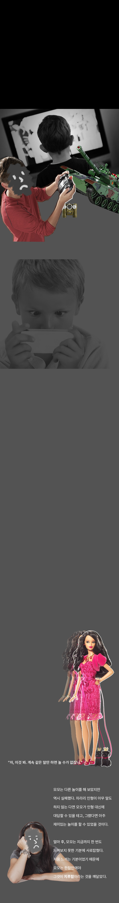
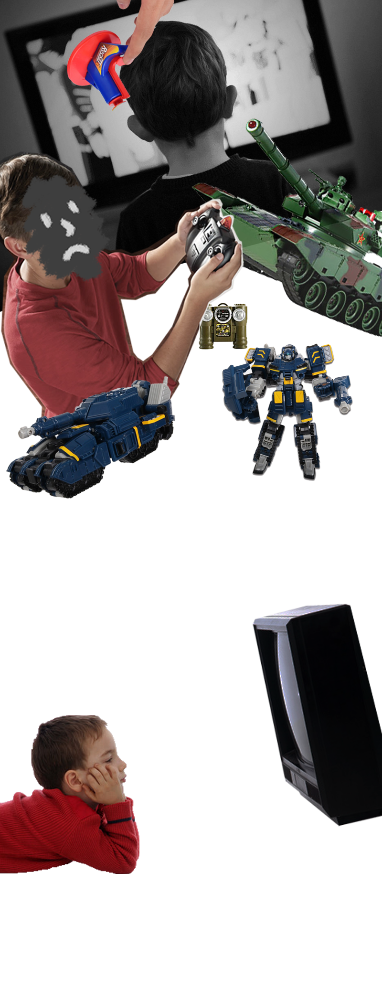
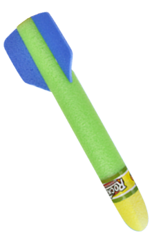
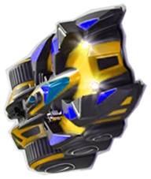

상상력
실제 경험하지 않은 현상이나 사물에 대하여 마음속으로 그려 보는 힘
장난감
아이들이 가지고 노는 여러 가지 물건




완벽한 장난감
완벽한 장난감
세세한 부분까지 완벽하게 만들어진 완벽한 장난감
바보 상자
세세한 부품까지 있는 것
똑같은 말만 반복하는 것
모모와 같이 장난감에 대해 알아볼까?
모모는 물론이고 모모의 친구들도
가져 본 적 없는 아주 값비싼 장난감도 있었다.
그런 장난감들은 아주 세세한 부분까지
완벽하게 만들어져 있어서
상상력을 발휘할 필요가 없었다.
그래서 아이들은 무엇에 홀린 듯이,
또는 그냥 못 견디게 지루해하며,
덜덜거리면서 돌아다니는 장난감,
흔들흔들 걸어다니는 장난감,
빙글빙글 돌면서 요란한 소리를 내는
장난감 따위를 몇 시간이고
우두커니 바라보았다.
"안녕, 난 비비걸이야. 완전한 인형이야."
"난 네 거야. 모두들 날 갖고 있는 널 부러워할 거야."
"난 더 많은 걸 갖고 싶어."
"안녕, 난 비비걸이야. 완전한 인형이야."
"난 네 거야. 모두들 날 갖고 있는 널 부러워할 거야."
"난 더 많은 걸 갖고 싶어."
"안녕, 난 비비걸이야. 완전한 인형이야."
"난 네 거야. 모두들 날 갖고 있는 널 부러워할 거야."
"난 더 많은 걸 갖고 싶어."
"안녕, 난 비비걸이야. 완전한 인형이야."